suivant: Table des matières et
monter: tutoriel
précédent: Vrai ou Faux ?
Table des matières
Index
Il y a souvent plusieurs manières d'obtenir le même résultat en
Xcas. On s'efforcera de choisir les solutions les plus compactes.
Exercice 9.1 Vérifier les identités suivantes.
-
(21/3 +41/3)3 -6(21/3 +41/3) = 6
-
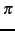/4 = 4 arctan(1/5) - arctan(1/239)
-
sin(5x) = 5 sin(x) - 20 sin3(x) + 15 sin5(x)
-
(tan(x) + tan(y))cos(x)cos(y) = sin(x + y)
-
cos6(x) + sin6(x) = 1 - 3 sin2(x)cos2(x)
-
ln(tan(x/2 + /4)) = argsinh(tan(x))
Exercice 9.2 Transformer la fraction rationnelle
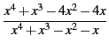
en les fractions suivantes
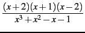 , 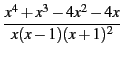 , 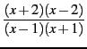 ,
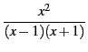 -4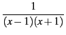 .
Exercice 9.3 Transformer la fraction rationnelle
2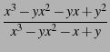
en les fractions suivantes
2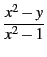 , 2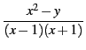 ,
2 - 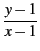 + 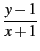 , 2 - 2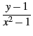 .
Exercice 9.4 On considère les fonctions
f définies par
f (x) = 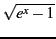 , f (x) = 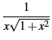 ,
f (x) = 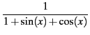 , f (x) = 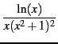 .
Pour chacune de ces fonctions :
- Calculer une primitive F.
- Calculer F'(x) et montrer que
F'(x) = f (x) après simplifications.
Exercice 9.5 On considère les intégrales définies
I = 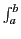
f (
x) d
x
suivantes.
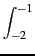

d
x , 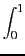
x arctan(
x) d
x ,
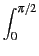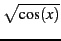 dx , x4sin(x)cos(x) dx .
Pour chacune de ces intégrales :
- Calculer la valeur exacte, puis approchée de l'intégrale I.
- Pour n = 100, puis n = 1000, et
pour tout
j = 0,..., n, on pose
xj = a + j(b - a)/n, et
yj = f (xj).
Calculer la valeur approchée de l'intégrale I par la
méthode des rectangles à gauche :
Ir =
 f
f (
xj)(
xj+1 -
xj) .
- Même question avec la méthode des trapèzes :
It =

(
f (
xj) +
f (
xj+1))(
xj+1 -
xj) .
Exercice 9.6 On considère la fonction
f qui au couple (
x,
y) associe
f (
x,
y) = cos(
xy).
- On pose
x0 = y0 = /4. Définir la fonction qui à (u, v, t)
associe
f (x0 + ut, y0 + vt) .
- Définir la fonction g qui à t associe la dérivée partielle par
rapport à t de la fonction précédente (dérivée
directionnelle).
- Calculer le gradient de la fonction f au point (x0, y0), puis le
produit scalaire de ce gradient avec le vecteur (u, v).
Donner ce résultat en fonction de g
Exercice 9.7 On considère l'équation
x3 - (
a - 1)
x2 +
a2x -
a3 = 0 comme une
équation en
x.
- Représenter graphiquement la solution x en fonction de a à l'aide
de la fonction
plotimplicit.
- Calculer les trois solutions de l'équation, en utilisant
rootof
pour la première, en éliminant la première avec quo et en
trouvant les deux dernières solutions en résolvant l'équation
du second degré (utiliser coeff pour calculer le discriminant
de l'équation).
- Représenter graphiquement chacune des
trois racines sur le même graphique avec une couleur
différente, et pour les valeurs de a
telles que ces solutions soient réelles (on pourra utiliser
resultant pour trouver les valeurs de a pour lesquelles
l'équation possède une racine multiple en x, ces valeurs
sont les bornes possibles des intervalles en a où chacune des
racines sont réelles).
- Donner la valeur des
solutions pour a = 0, 1, 2.
Exercice 9.8 On considère les limites suivantes.
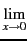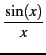 ,

(sin(
x))
1/x , 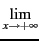(1 + 1/
x)
x , (2
x +3
x)
1/x
Pour chacune d'entre elles :
- Donner sa valeur exacte.
- Trouver une valeur de x telle que la distance de f (x) à la
limite soit inférieure à 10-3.
Exercice 9.9 Représenter les fonctions
f suivantes, en choisissant l'intervalle
des abscisses et des ordonnées, de façon à obtenir
la représentation la plus informative possible.
- f (x) = 1/x.
- f (x) = ex.
-
f (x) = 1/sin(x).
-
f (x) = x/sin(x).
-
f (x) = sin(x)/x.
Exercice 9.10 On considère la fonction
f (
x) = 3
x2 +1 + 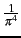ln(( -
x)
2).
- Vérifier que cette fonction prend des valeurs négatives sur
 +. Représenter la fonction sur l'intervalle [0, 5].
+. Représenter la fonction sur l'intervalle [0, 5].
- Déterminer
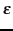 > 0 tel que Xcas donne une représentation
correcte de la fonction sur l'intervalle
[ - , + ].
Exercice 9.11
- Représenter la fonction exp(x) sur l'intervalle [- 1, 1].
Sur ce graphique, tracer aussi les représentations
des polynômes de Taylor de cette fonction en x = 0, aux ordres
1, 2, 3, 4.
- Même question pour l'intervalle [1, 2].
- Représenter la fonction sin(x) sur l'intervalle
[- ,]. Sur
le même graphique, superposer les représentations
des polynômes de Taylor de cette fonction en x = 0, aux ordres
1, 3, 5.
Exercice 9.12 Superposer les représentations suivantes sur le même graphique,
allant de 0 à 1 en abscisse et en ordonnée.
- La première bissectrice (y = x).
- Le graphe de la fonction
f : x 1/6 + x/3 + x2/2.
- La tangente au graphe de la fonction f au point x = 1.
- Un segment vertical allant de l'axe des x au
point d'intersection de la fonction f et de
la première bissectrice, et
un segment horizontal allant de ce point d'intersection
à l'axe des y.
- Les indications "point fixe" et "tangente", positionnées sur le
graphique comme chaînes de caractères.
Exercice 9.13 Le but de l'exercice est de représenter sur un même graphique
des familles de fonctions. On choisira le nombre de courbes, l'intervalle
de représentation, les échelles en
x et
y ainsi que le
pas de discrétisation des abscisses, de façon à obtenir
la représentation la plus informative possible.
- Fonctions
fa(x) = xae-x, pour a allant de -1 à 1.
- Fonctions
fa(x) = 1/(x - a)2, pour a allant de -1 à 1.
- Fonctions
fa(x) = sin(ax), pour a allant de 0 à 2.
Exercice 9.14 Pour chacune des courbes paramétrées suivantes, on choisira un
intervalle de valeurs du paramètre
assurant une représentation complète et suffisamment lisse.

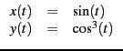

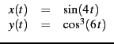

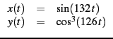
Exercice 9.15 Le but de l'exercice est de visualiser de différentes manières
la surface définie par
z =
f (
x,
y) =
x y2. Ouvrir une fenêtre
de géométrie 3-d.
- Choisir un domaine de représentation et les pas de discrétisation,
de manière à obtenir une représentation informative
avec
plotfunc.
- Créer un paramètre a modifiable à la souris
avec la fonction
assume.
Représenter la courbe définie par z = f (a, y), puis faites
varier le paramètre à la souris.
- Créer un paramètre b modifiable à la souris.
Représenter la courbe définie par z = f (x, b), puis faites
varier le paramètre à la souris.
Exercice 9.16 Le but de l'exercice est de visualiser un cône de différentes
manières.
- Représenter la surface d'équation
z = 1 - 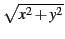.
- Représenter la surface paramétrée définie par :

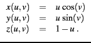
- En choisisant une valeur de a suffisamment grande, représenter la courbe
paramétrée définie par :

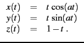
- Représenter la famille de courbes paramétrées définies par :

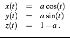
- Représenter le même cône en utilisant la fonction
cone.
Exercice 9.17
- Engendrer une liste l de 100 entiers au hasard entre 1 et 9.
- Vérifier que l'ensemble des valeurs de l est contenu dans
{1,..., 9}.
- Extraire de la liste l toutes les valeurs
 5.
5.
- Pour tout
k = 1,..., 9, compter combien de valeurs de la liste l
sont égales à k.
Exercice 9.18 Si
x est un réel, la fraction continue à l'ordre
n de
x est
une liste
[
a0,...,
an] d'entiers, dont le premier terme
a0
est la partie entière de
x. Pour tout
n 0,
an est la
partie entière de l'inverse de la partie décimale de
an-1.
La liste
[
a0,...,
an] est associée au rationnel
un = a0 + 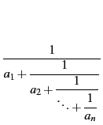
Pour
x 
{,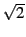,
e} et
n {5, 10} :
- Calculer
[a0,..., an].
- Comparer votre résultat avec celui que donne la fonction
dfc
de Xcas.
- Calculer un, et donner la valeur numérique de x - un.
Exercice 9.19 Ecrire (sans utiliser de boucle) les séquences suivantes :
- Nombres de 1 à 3 par pas de 0.1.
- Nombres de 3 à 1 par pas de -0.1.
- Carrés des 10 premiers entiers.
- Nombres de la forme
(- 1)nn2 pour
n = 1,..., 10.
- 10 "0" suivis de 10 "1".
- 3 "0" suivis de 3 "1", suivis de 3 "2",...,
suivis de 3 "9".
- "1", suivi de 1 "0", suivi de "2", suivi de 2 "0",...
, suivi de "8", suivi de 8 zéros, suivi de "9".
- 1 "1" suivi de 2 "2", suivis de 3 "3",...,
suivis de 9 "9".
Exercice 9.20
- Définir les polynômes de degré 6 suivants.
- polynôme dont les racines sont les entiers de 1 à 6.
- polynôme dont les racines sont 0 (racine triple), 1
(racine double) et 2 (racine simple).
- polynôme (x2 -1)3.
- polynôme x6 - 1.
- Ecrire (sans utiliser la fonction
companion)
la matrice compagnon A associée à chacun de ces polynômes.
On rappelle que la matrice compagnon associée au polynôme :
P = xd + ad-1xd-1 + ... + a1x + a0 ,
est :
- Calculer les valeurs propres de la matrice A.
- Calculer le polynôme caractéristique de A.
Exercice 9.21
- Ecrire la matrice carrée A d'ordre 4, telle que aj, k = a si j = k et
aj, k = b si j
 k, où a et b sont des variables.
k, où a et b sont des variables.
- Calculer et factoriser le polynôme caractéristique de A.
- Déterminer une matrice orthogonale P telle que
tPAP soit
une matrice diagonale.
- Utiliser la question précédente pour définir la fonction
qui à un entier n associe la matrice An.
- Calculer Ak, pour
k = 1,..., 6 en effectuant les produits
matriciels, et vérifier que la fonction définie à la question
précédente donne bien le même résultat.
Exercice 9.22
- Ecrire la matrice carrée N d'ordre 6, telle que nj, k = 1 si k = j + 1 et
nj, k = 0 si
k j + 1.
- Calculer Np, pour
p = 1,..., 6.
- Ecrire la matrice A = xI + N, où x est une variable.
- Calculer Ap, pour
p = 1,..., 6.
- Calculer exp(At) en fonction de x et t :
exp(At) = I + 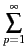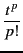Ap .
Exercice 9.23 Ecrire les fonctions suivantes, sans utiliser de boucle.
- La fonction f prend en entrée un entier n
et deux réels a, b et retourne
la matrice A dont les termes diagonaux valent a, tous les autres
termes étant égaux à b.
- La fonction g prend en entrée un entier n et trois réels a, b, c et retourne
la matrice
A = (aj, k)j, k=1,..., n dont les termes diagonaux
sont égaux à a, les termes aj, j+1 égaux à b et
termes aj+1, j égaux à c, pour
j = 1,..., n - 1 (les autres
termes sont nuls).
- La fonction H prend en entrée un entier n et retourne en sortie
la matrice
A = (aj, k)j, k=1,..., n
définie par
aj, k = 1/(j + k + 1) (matrice de Hilbert).
Comparer le temps d'exécution de votre fonction avec celui de
la fonction
hilbert
- La fonction V prend en entrée un vecteur
x = (xj)j=1,..., n
et retourne en sortie la matrice
A = (aj, k)j, k=1,..., n
définie par
aj, k = xkj-1 (matrice de Vandermonde).
Comparer le temps d'exécution de votre fonction avec celui de
la fonction
vandermonde
- La fonction T prend en entrée un vecteur
x = (xj)j=1,..., n
et retourne en sortie la matrice
A = (aj, k)j, k=1,..., n
définie par
aj, k = x| j-k|+1 (matrice de Toeplitz).
Exercice 9.24 Ecrire les fonctions suivantes. Toutes prennent en entrée une fonction
f (de
dans
), et trois valeurs
xmin,
x0 et
xmax (supposées telles que
xmin x0 xmax).
derive :
Elle calcule et représente graphiquement
la dérivée de f sur l'intervalle
[xmin, xmax]. Elle retourne la
une valeur de f'(x0).
tangente :
Elle représente la fonction f sur l'intervalle
[xmin, xmax], elle
superpose sur le même graphique la tangente au graphe de f au point x0,
et retourne l'équation de cette tangente comme un polynôme du premier
degré.
araignee :
Elle représente la fonction f sur l'intervalle
[xmin, xmax],
ainsi que la droite d'équation y = x (première bissectrice).
Elle calcule et retourne les 10 premiers itérés de f en x0
(
x1 = f (x0), x2 = fof (x0),...). Elle représente la suite de
segments, alternativement verticaux et horizontaux, permettant de visualiser
les itérations : segments joignant (x0, 0), (x0, x1), (x1, x1),
(x1, x2), (x2, x2), ...
(comparer avec la fonction plotseq)
newton_graph :
Elle représente la fonction f sur l'intervalle
[xmin, xmax].
Elle calcule et retourne les dix premiers itérés de la suite définie
à partir de x0 par la méthode de Newton :
x1 = x0 - f (x0)/f'(x0),
x2 = x1 - f (x1)/f'(x1) ... Les valeurs de la dérivée sont
approchées. La fonction représente sur le même graphique les
segments permettant de visualiser les itérations : segments joignant
(x0, 0),
(x0, f (x0)), (x1, 0),
(x1, f (x1)), (x2, 0),
(x2, f (x2)),...
(comparer avec la fonction newton)
Exercice 9.25 On note
D le carré unité :
D =]0, 1[
2. Soit 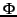
l'application définie sur
D par
(
x,
y) = (
z(
x,
y),
t(
x,
y)) =

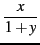 , 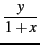

.
- Calculer l'inverse de l'application .
- Déterminer et représenter graphiquement
l'image par du domaine D:
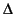 = (D).
- Soit A(x, y) la matrice jacobienne de en un point (x, y) de
D, et B(z, t) la matrice jacobienne de 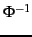 en un point (x, y) de
. Calculer ces deux matrices, vérifier que
B((x, y)) et
A(x, y) sont inverses l'une de l'autre.
- Soit J(z, t) le déterminant de la matrice B. Calculer et
simplifier J(z, t).
- Calculer
I1 = 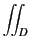

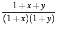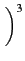 d
xdy .
- Calculer
I2 = 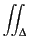 (1 + z)(1 + t) dzdt ,
et vérifier que I1 = I2.
suivant: Table des matières et
monter: tutoriel
précédent: Vrai ou Faux ?
Table des matières
Index
Documentation de giac écrite par Renée De Graeve